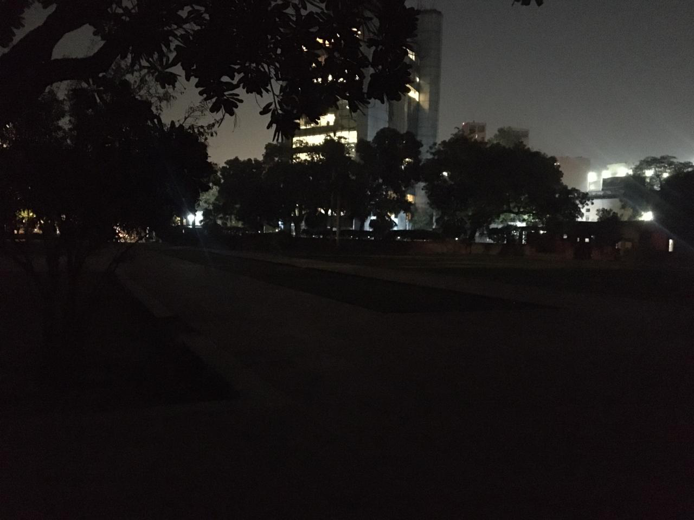
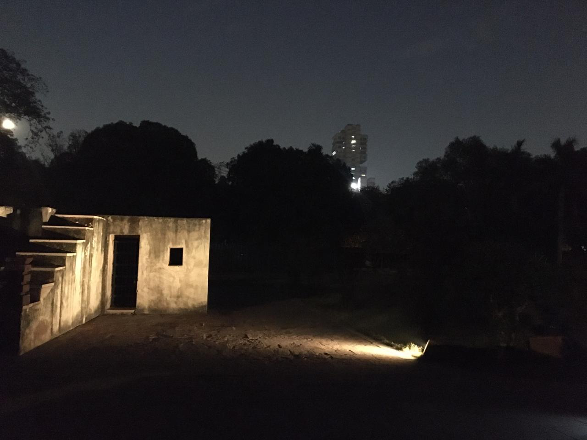

<html>
  <head>
    <title>Pilot_Survey</title>
    <script src="jspsych-6.0.5/jquery-3.4.1.min.js"></script>
    <script src="jspsych-6.0.5/jspsych.js"></script>
    <script src="jspsych-6.0.5/plugins/jspsych-html-keyboard-response.js"></script>
    <script src="jspsych-6.0.5/plugins/jspsych-image-button-response.js"></script>
    <script src="jspsych-6.0.5/plugins/jspsych-image-keyboard-response.js"></script>
    <script src="jspsych-6.0.5/plugins/jspsych-survey-text.js"></script>
    <script src="jspsych-6.0.5/plugins/jspsych-image-survey-text.js"></script>
    <script src="jspsych-6.0.5/plugins/jspsych-survey-multi-choice.js"></script>
    <link href="jspsych-6.0.5/css/jspsych.css" rel="stylesheet" type="text/css"></link>
    <style>
      img {
        height: 375px;
              }
             
    </style>
  </head>
  <body></body>
  <script>

    // Get date and time
var today = new Date();
var date = today.getFullYear()+'-'+(today.getMonth()+1)+'-'+today.getDate();
var time = today.getHours() + ":" + today.getMinutes() + ":" + today.getSeconds();
var experiment_date = date+' '+time;

// Generate Respondent's Unique ID
var subject_id = [];
while(subject_id.length < 1){
    var r = Math.floor(Math.random() * 100) + 1;
    if(subject_id.indexOf(r) === -1) subject_id.push(r);
}

// Survey begins
var timeline = [];
var noteSection1 = {
  type: "html-keyboard-response",
  stimulus: "This is the start of section 1. Press any key to begin."
};
timeline.push(noteSection1);

// Defining options for demographic questions
var incomeBracket_options = ["Less than 1 Lakh per annum", "More than 1 lakh but less than 10 lakh per annum", "More than 10 Lakh but less than 25 Lakh per annum", "More than 25 Lakhs but less than 40 Lakh per annum", "More than 40 lakhs per annum","Prefer not to say"];
var educationalQualification_options = ["12th Class", "Under-Graduation", "Post Graduation", "Doctorate or higher"];
var caste_options=["General","SC","ST","BC","OC","OBC","Other","Prefer not to say"];
var religion_options=["Hinduism","Islam","Sikhism","Christianity","Buddhism","Jainism","Other","Prefer not to say"];
var gender_options=["Female","Male","Non-binary/Third Gender","Prefer not to say","Other"];
var locality_options=["Village",'Town',"City"];
var timeSpanDelhi_options=["Less than 6 months","Between 6 months and 1 year", "Between 1 and 3 years","More than 3 years"];

//Defining parameters for Demographics Questions
var nameAge={
type: 'survey-text',
questions: [
     {prompt: 'Name',columns: 30},
     {prompt:'Age', columns:10},
     {prompt:'What is your place of birth?', columns: 20}
       ]
      };
      timeline.push(nameAge);
 var demographics={
  type: 'survey-multi-choice',
  questions:[
  {prompt:"Which of the following gender-categories do you most identify with?",options: gender_options, required: false,},
  {prompt:" Which of the following religion-categories do you most identify with?", options: religion_options, required: false,},
  {prompt:" Which of the following caste-categories do you most identify with?", options: caste_options, required: false,},
  {prompt: "What is the highest degree you have completed?", options: educationalQualification_options, required: false, },
  {prompt: "What is the highest degree your mother has completed?",options:educationalQualification_options, required: false, },
  {prompt: "What is the highest degree your father has completed?",options:educationalQualification_options, required: false, },
  {prompt: "What is your best guess of your household's total annual income (in Rupees)?", options:  incomeBracket_options, required:false,},
  {prompt: "Which of the following locality-categories best describes your permanent area of residence?", options: locality_options, required:false},
  {prompt:"How long have you lived in Delhi?", options: timeSpanDelhi_options, required:false} 
  ] 
 };  
 timeline.push(demographics);  

// Section 2
   var noteSection2 = {
      type: "html-keyboard-response",
      stimulus: "This is the start of section 2. Press any key to begin."
    };
    timeline.push(noteSection2);

// Defining parameters for Safety Label Question(Day)
var testStimuliDay = [
      { stimulus: "img/2b_Sansad_Marg.png"},
      { stimulus: "img/3b_Sansad_Marg.png"},
      {stimulus:  "img/5d_Sansad_Marg.png"},
      {stimulus:"img/6b_Jantar_Mantar.png"},
      {stimulus: "img/11b_Jantar_Mantar.png"},
    ];

 var testDay = {
      type: "image-button-response",
      stimulus: jsPsych.timelineVariable('stimulus'),
      margin_vertical: '2px',
      margin_horizontal: '2px',
      choices: ['Unsafe', 'Safe'],
    prompt: "<p style='font-size:20px'>Please choose the appropriate label that you associate with this street?</p>"
    }

    var testProcedureDay = {
      timeline: [testDay],
      timeline_variables: testStimuliDay,
      randomize_order: true,
      }

    timeline.push(testProcedureDay);

// Section 3
var noteSection3 = {
      type: "html-keyboard-response",
      stimulus: "This is the start of section 3. Press any key to proceed."
    };
    timeline.push(noteSection3);

// Defining parameters for Image Label Question(Day/Night)
var dayImages_2 = [
      { stimulus: "img/2b_Sansad_Marg.png"},
      { stimulus: "img/3b_Sansad_Marg.png"},
         ];

         var testDay_2 = {
      type: "image-button-response",
      stimulus: jsPsych.timelineVariable('stimulus'),
      margin_vertical: '2px',
      margin_horizontal: '2px',
      choices: ['Unsafe', 'Safe'],
    prompt: "<p style='font-size:20px'>Please choose the appropriate label that you associate with this street?</p>"
    }

    var testProcedureDay_2 = {
      timeline: [testDay_2],
      timeline_variables: dayImages_2,
      randomize_order: true,
      }
      
      var nightImages = [
      { stimulus: "img/2b_Sansad_Marg_night.png"},
      { stimulus: "img/3b_Sansad_Marg_night.png"},
    ];
    
    var testNight = {
      type: "image-button-response",
      stimulus: jsPsych.timelineVariable('stimulus'),
     margin_horizontal: '2px',
     margin_vertical: '2px',
      choices: ['Unsafe', 'Safe'],
    prompt: "<p style='font-size:20px'>Please choose the appropriate label that you associate with this street?</p>"
    }

    var testProcedureNight = {
      timeline: [testNight],
      timeline_variables: nightImages,
      randomize_order: true,
      }
      
      var day_test = {
        timeline: [testProcedureDay_2], 
        conditional_function: function(){
             if(subject_id%2 == 0){
  return true;
} else {
  return false;
}
 }
}
timeline.push(day_test);

var night_test = {
        timeline: [testProcedureNight], 
        conditional_function: function(){
             if(subject_id%2 != 0){
  return true;
} else {
  return false;
}
 }
}
timeline.push(night_test);

     
// Section 4
      var noteSection4 = {
        type: "html-keyboard-response",
        stimulus: "This is the start of section 4. Press any key to proceed."
      };
      timeline.push(noteSection4);

// Defining parameters for Safety Attributes Section
     // Parameters for Set 1 of attribute question
  var attributes_set1a = {
    type: "image-button-response",
    stimulus: "img/2b_Sansad_Marg.png",
    choices: ['Unsafe', 'Safe'],
    prompt : "<p style='font-size:20px'>Please choose the appropriate label that you associate with this street?</p>"
  };
  
  var attributes_set1b = {
    type: "image-survey-text",
    stimulus: "img/2b_Sansad_Marg.png",
    questions: [
            {prompt: "<p style='font-size:15px'>Can you identify which aspects of the image above lead you to choose the label on the previous page?</p>", rows: 5}
          ],
        };

  var attributes_set1 = {
    timeline: [attributes_set1a, attributes_set1b]
  };

  // Paramter for Set 2 of attribute question
  var attributes_set2a = {
    type: "image-button-response",
    stimulus: "img/3b_Sansad_Marg.png",
    choices: ['Unsafe', 'Safe'],
    prompt : "<p style='font-size:20px'>Please choose the appropriate label that you associate with this street?</p>"
  };
  
  var attributes_set2b = {
    type: "image-survey-text",
    stimulus: "img/3b_Sansad_Marg.png",
    questions: [
            {prompt: "<p style='font-size:15px'>Can you identify which aspects of the image above lead you to choose the label on the previous page?</p>", rows: 5}
          ],
        };

  var attributes_set2 = {
    timeline: [attributes_set2a, attributes_set2b]
  };

  // Paramter for Set 3 of attribute question
  var attributes_set3a = {
    type: "image-button-response",
    stimulus: "img/5d_Sansad_Marg.png",
    choices: ['Unsafe', 'Safe'],
    prompt : "<p style='font-size:20px'>Please choose the appropriate label that you associate with this street?</p>"
  };
  
  var attributes_set3b = {
    type: "image-survey-text",
    stimulus: "img/5d_Sansad_Marg.png",
    questions: [
            {prompt: "<p style='font-size:15px'>Can you identify which aspects of the image above lead you to choose the label on the previous page?</p>", rows: 5}
          ],
        };

  var attributes_set3 = {
    timeline: [attributes_set3a, attributes_set3b]
  };

  // Parameters for Set 4 of attribute question
  var attributes_set4a = {
    type: "image-button-response",
    stimulus: "img/6b_Jantar_Mantar.png",
    choices: ['Unsafe', 'Safe'],
    prompt : "<p style='font-size:20px'>Please choose the appropriate label that you associate with this street?</p>"
  };
  
  var attributes_set4b = {
    type: "image-survey-text",
    stimulus: "img/6b_Jantar_Mantar.png",
    questions: [
            {prompt: "<p style='font-size:15px'>Can you identify which aspects of the image above lead you to choose the label on the previous page?</p>", rows: 5}
          ],
        };

  var attributes_set4 = {
    timeline: [attributes_set4a, attributes_set4b]
  };

  // Parameters for Set 5 of attribute question
   var attributes_set5a = {
    type: "image-button-response",
    stimulus: "img/11b_Jantar_Mantar.png",
    choices: ['Unsafe', 'Safe'],
    prompt : "<p style='font-size:20px'>Please choose the appropriate label that you associate with this street?</p>"
  };
  
  var attributes_set5b = {
    type: "image-survey-text",
    stimulus: "img/11b_Jantar_Mantar.png",
    questions: [
            {prompt: "<p style='font-size:15px'>Can you identify which aspects of the image above lead you to choose the label on the previous page?</p>", rows: 5}
          ],
        };

  var attributes_set5 = {
    timeline: [attributes_set5a, attributes_set5b]
  };

  // Combining all sets in one for randomiztion of display order.
  var random_order = jsPsych.randomization.shuffle([attributes_set1, attributes_set2, attributes_set3, attributes_set4, attributes_set5]);
        timeline= timeline.concat(random_order[0],random_order[1],random_order[2],random_order[3],random_order[4]);
  
        
// Section 5 
      var noteSection5 = {
        type: "html-keyboard-response",
        stimulus: "This is the start of section 5. Press any key to proceed."
      };
      timeline.push(noteSection5);

// Defining parameters for Shortcut Label Question  
      
      var shortcut_trial_set1a = {
          type: 'html-keyboard-response',
         stimulus: "<div style='width: 1500px;'>"+
          "<div style='float: left;'></img>" +
          "<p class='small'></p></div>" +
          "<div class='float: right;'></img>" +
          "<p class='small'></p></div>" +
          "</div>",
          prompt: "<p>Suppose you are walking to a destination which is 30 minutes away from the location depicted in the  <strong>image to your left. </strong>" +
          "After a while, you come across a path which is a shortcut to your required destinaion.The shortcut involved walking through the location, " +
          "depicted in the  <strong>image to your right </strong>.</p>"+
          "<p>(Press any key to continue).</p>",
          trial_duration: 30000,
        };

        var shortcut_trial_set1b = {
          type: 'image-button-response',
          stimulus : 'img/2b_Sansad_Marg_night.png',
          choices: ['No,I dont think I would', 'Yes, if it saves me 5 minutes','Yes, if it saves me 10 minutes','Yes, if it saves me 20 minutes'],
          prompt: "<p>Would you take this shortcut to your destination?</p>" 
        };
        
        var test_shortcut_trial_set1 = {
          timeline : [shortcut_trial_set1a, shortcut_trial_set1b]
        };

        // Loading parameters for set 2 of 'safe'|'unsafe' shortcut q.

         var shortcut_trial_set2a = {
          type: 'html-keyboard-response',
         stimulus: "<div style='width: 1500px;'>"+
          "<div style='float: left;'></img>" +
          "<p class='small'></p></div>" +
          "<div class='float: right;'></img>" +
          "<p class='small'></p></div>" +
          "</div>",
          prompt: "<p>Suppose you are walking to a destination which is 30 minutes away from the location depicted in the  <strong>image to your left. </strong>" +
          "After a while, you come across a path which is a shortcut to your required destinaion.The shortcut involved walking through the location, " +
          "depicted in the  <strong>image to your right </strong>.</p>"+
          "<p>(Press any key to continue).</p>",
          trial_duration: 30000,
        };

        var shortcut_trial_set2b = {
          type: 'image-button-response',
          stimulus : 'img/3b_Sansad_Marg_night.png',
          choices: ['No,I dont think I would', 'Yes, if it saves me 5 minutes','Yes, if it saves me 10 minutes','Yes, if it saves me 20 minutes'],
          prompt: "<p>Would you take this shortcut to your destination?</p>" 
        };
        
        var test_shortcut_trial_set2 = {
          timeline : [shortcut_trial_set2a, shortcut_trial_set2b]
        };

        // Loading parameters for set 3 of 'safe'|'unsafe' shortcut q.
        
        var shortcut_trial_set3a = {
          type: 'html-keyboard-response',
         stimulus: "<div style='width: 1500px;'>"+
          "<div style='float: left;'></img>" +
          "<p class='small'></p></div>" +
          "<div class='float: right;'></img>" +
          "<p class='small'></p></div>" +
          "</div>",
          prompt: "<p>Suppose you are walking to a destination which is 30 minutes away from the location depicted in the  <strong>image to your left. </strong>" +
          "After a while, you come across a path which is a shortcut to your required destinaion.The shortcut involved walking through the location, " +
          "depicted in the  <strong>image to your right </strong>.</p>"+
          "<p>(Press any key to continue).</p>",
          trial_duration: 30000,
        };

        var shortcut_trial_set3b = {
          type: 'image-button-response',
          stimulus : 'img/5d_Sansad_Marg_night.png',
          choices: ['No,I dont think I would', 'Yes, if it saves me 5 minutes','Yes, if it saves me 10 minutes','Yes, if it saves me 20 minutes'],
          prompt: "<p>Would you take this shortcut to your destination?</p>" 
        };
        
        var test_shortcut_trial_set3 = {
          timeline : [shortcut_trial_set3a, shortcut_trial_set3b]
        };

      //Loading parameters for set 4 of 'safe'|'unsafe' shortcut q.

      var shortcut_trial_set4a = {
          type: 'html-keyboard-response',
         stimulus: "<div style='width: 1500px;'>"+
          "<div style='float: left;'></img>" +
          "<p class='small'></p></div>" +
          "<div class='float: right;'></img>" +
          "<p class='small'></p></div>" +
          "</div>",
          prompt: "<p>Suppose you are walking to a destination which is 30 minutes away from the location depicted in the  <strong>image to your left. </strong>" +
          "After a while, you come across a path which is a shortcut to your required destinaion.The shortcut involved walking through the location, " +
          "depicted in the  <strong>image to your right </strong>.</p>"+
          "<p>(Press any key to continue).</p>",
          trial_duration: 30000,
        };

        var shortcut_trial_set4b = {
          type: 'image-button-response',
          stimulus : 'img/6b_Jantar_Mantar_night.png',
          choices: ['No,I dont think I would', 'Yes, if it saves me 5 minutes','Yes, if it saves me 10 minutes','Yes, if it saves me 20 minutes'],
          prompt: "<p>Would you take this shortcut to your destination?</p>" 
        };
        
        var test_shortcut_trial_set4 = {
          timeline : [shortcut_trial_set4a, shortcut_trial_set4b]
        };

        //Loading parameters for set 5 of 'safe'|'unsafe' shortcut q.

      var shortcut_trial_set5a = {
          type: 'html-keyboard-response',
         stimulus: "<div style='width: 1500px;'>"+
          "<div style='float: left;'></img>" +
          "<p class='small'></p></div>" +
          "<div class='float: right;'></img>" +
          "<p class='small'></p></div>" +
          "</div>",
          prompt: "<p>Suppose you are walking to a destination which is 30 minutes away from the location depicted in the  <strong>image to your left. </strong>" +
          "After a while, you come across a path which is a shortcut to your required destinaion.The shortcut involved walking through the location, " +
          "depicted in the  <strong>image to your right </strong>.</p>"+
          "<p>(Press any key to continue).</p>",
          trial_duration: 30000,
        };

        var shortcut_trial_set5b = {
          type: 'image-button-response',
          stimulus : 'img/11b_Jantar_Mantar_night.png',
          choices: ['No,I dont think I would', 'Yes, if it saves me 5 minutes','Yes, if it saves me 10 minutes','Yes, if it saves me 20 minutes'],
          prompt: "<p>Would you take this shortcut to your destination?</p>" 
        };
        
        var test_shortcut_trial_set5 = {
          timeline : [shortcut_trial_set5a, shortcut_trial_set5b]
        };

        // Combining all sets in one for randomiztion of display order.
        var random_order = jsPsych.randomization.shuffle([test_shortcut_trial_set1, test_shortcut_trial_set2, test_shortcut_trial_set3, test_shortcut_trial_set4, test_shortcut_trial_set5]);
        timeline= timeline.concat(random_order[0],random_order[1],random_order[2],random_order[3],random_order[4]);
       
        // Launching the survey, sending data to the database 
       jsPsych.init({
      timeline: timeline,
      experiment_width: 50,
      on_finish: function() {
        jsPsych.data.addProperties({dateOfExperiment:experiment_date,respondentID:subject_id}); // maybe add endExperiment var?
        $.ajax({
      type: "POST",
      url: "/experiment-data",
      data:  jsPsych.data.get(),
      contentType: "application/json"
    })
    .done(function() {
      window.location.href = "finish";
    })
    .fail(function() {
      alert("A problem occurred while writing to the database. Please contact the researcher for more information.")
      window.location.href = "/";
    })
      } 
    });
</script>
 </html>
